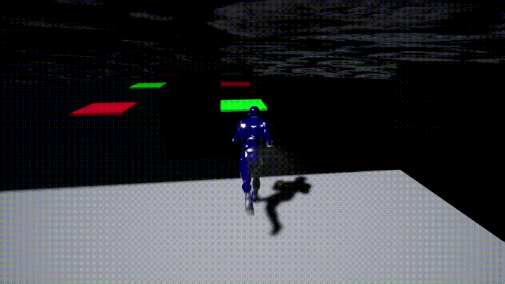
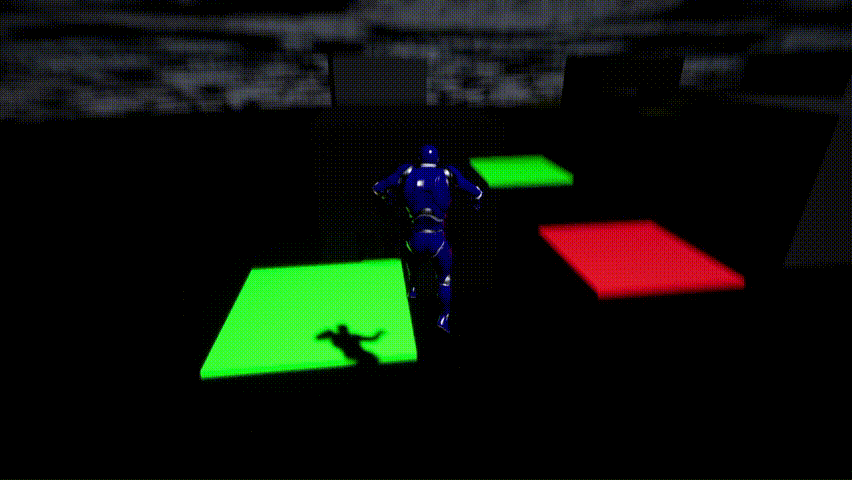
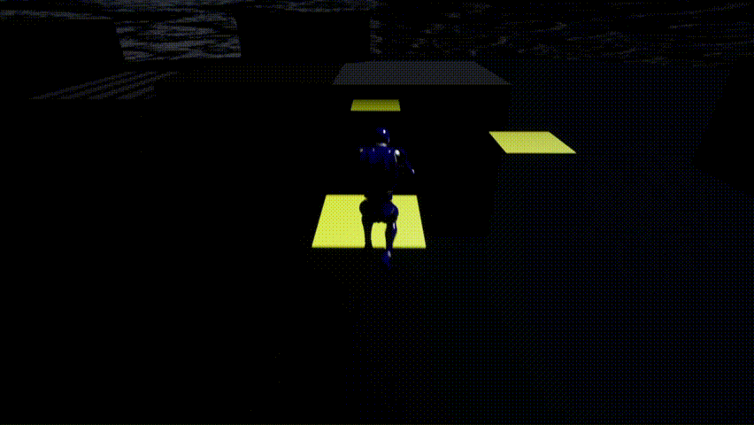
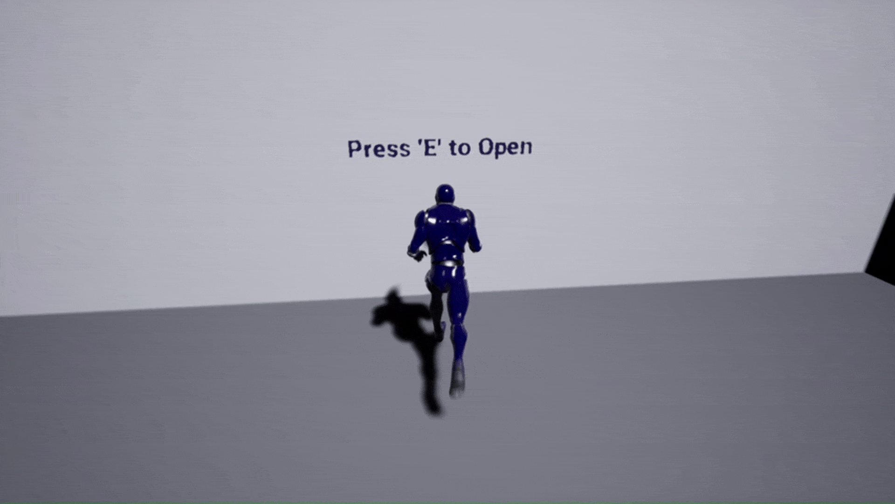
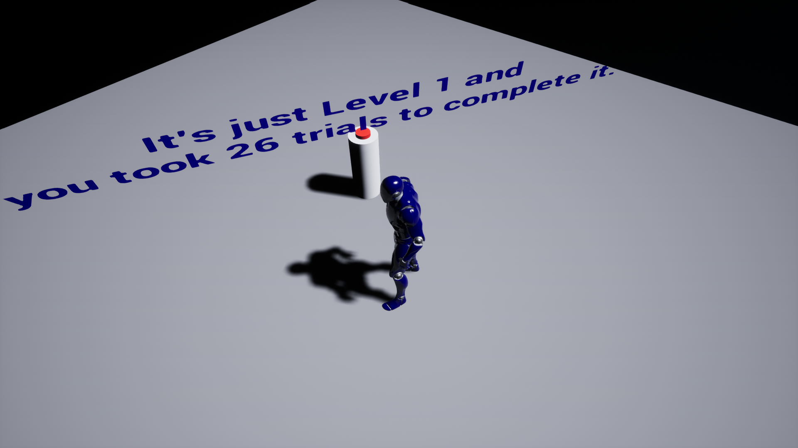

3D Platformer | Trolling
A "classic" 3D platformer where you find your way to the end point.
It is mainly inspired by Cat Mario. It is designed to frustrate and annoy the player given
the only theme of Heartbreak. The forms of fun aimed for the level are thrill of danger as
well as advancement and completion.
Disclaimer: This is just a gameplay level demo, not a full game.





Tan Pink Herr
Level Designer & Programmer